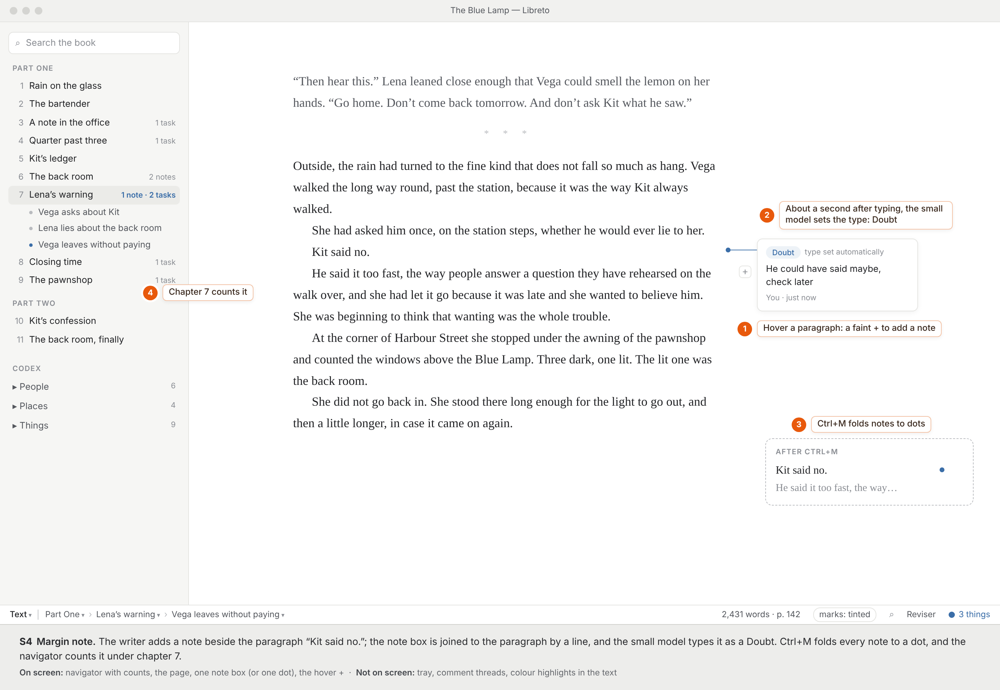
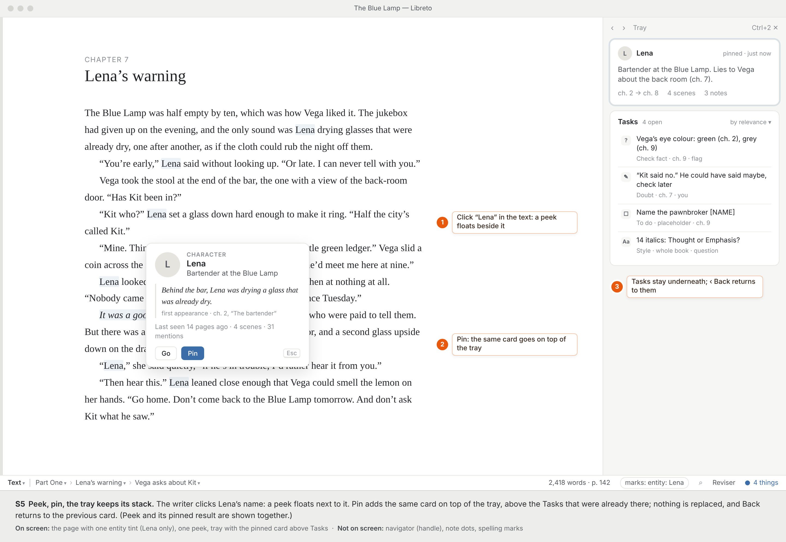
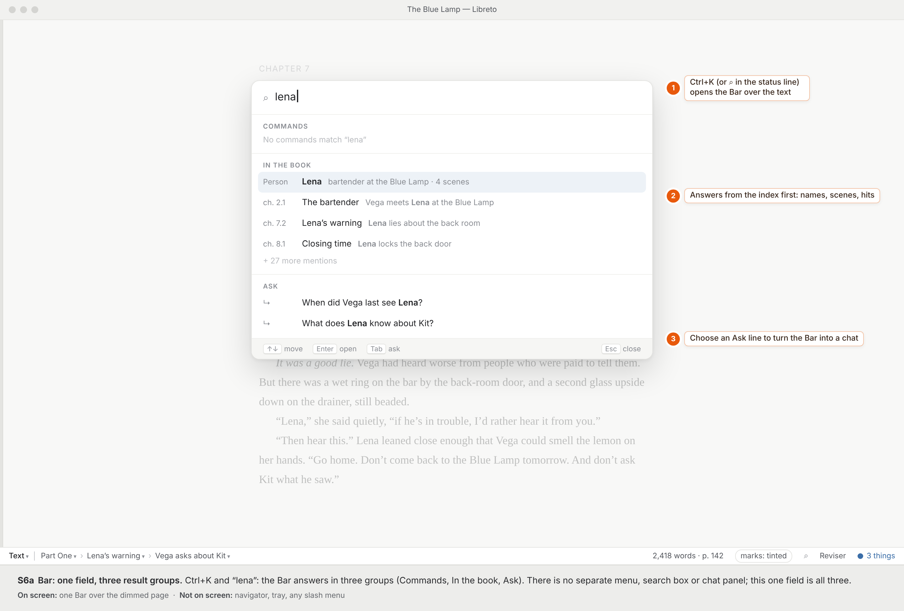
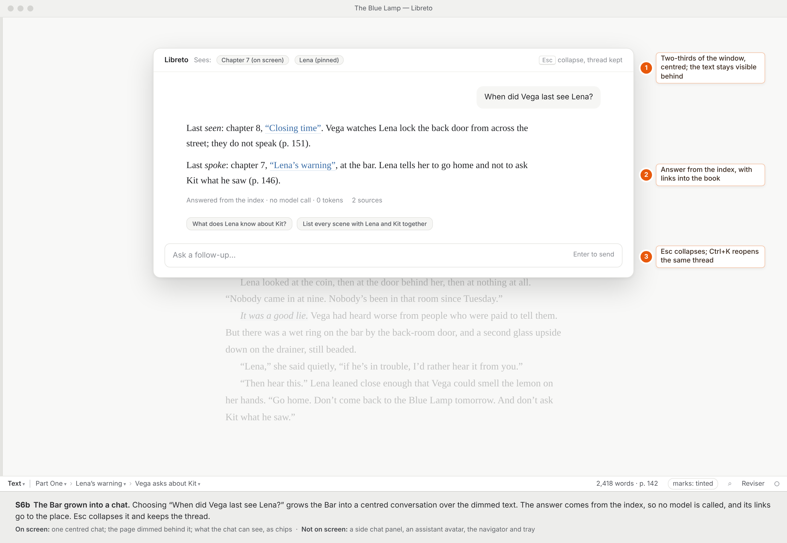
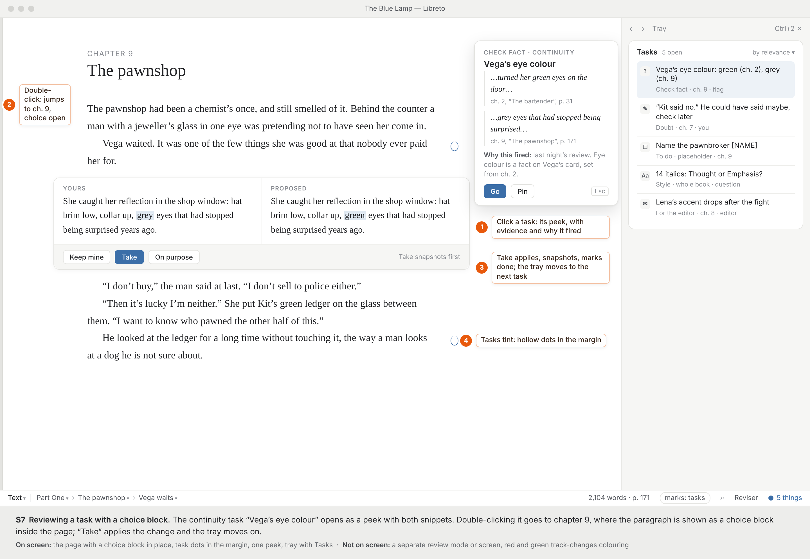
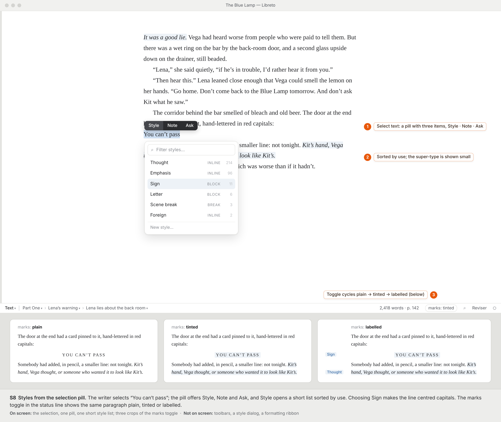
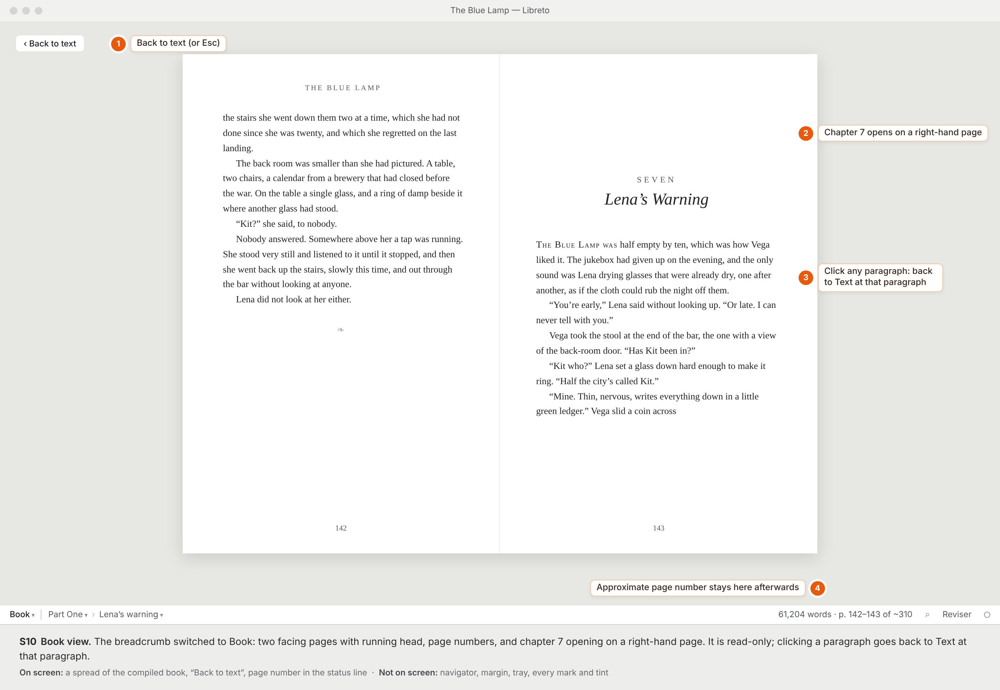
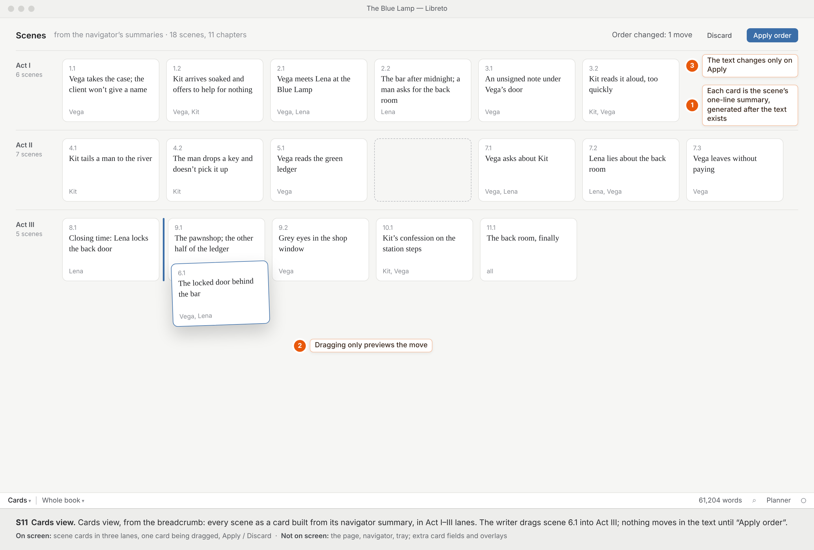
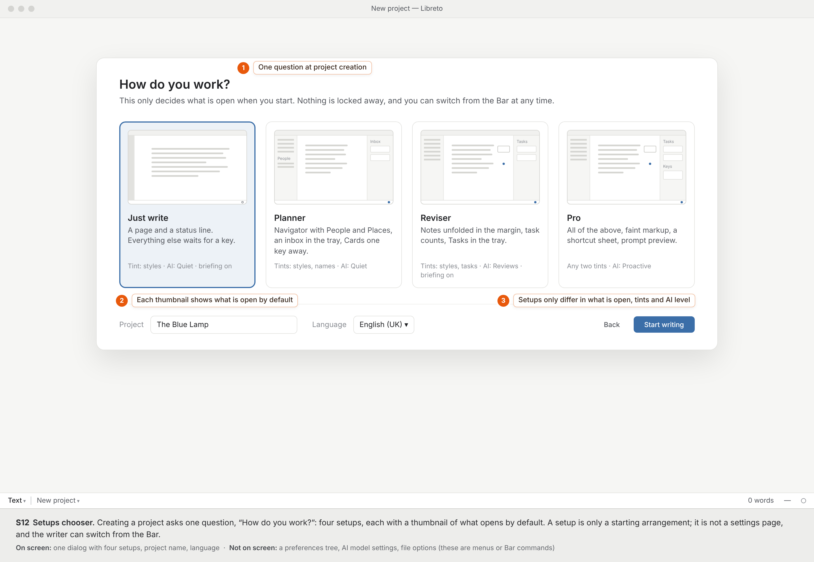

S1 · Just write, first minute
A new project in the “Just write” setup: the writer types “Chapter 1” on its own line and keeps going. Libreto quietly turns it into a heading and offers a one-time undo in the status line.

Draft 1 of the “one page, seven pieces” concept: Page, Navigator, Margin, Peek, Tray, Bar, Status line; the Text, Cards and Book views; the Style · Note · Ask pill. These screens show what is on screen and what is not. The visual style is placeholder: calm greys, one blue accent, a book serif for the text.
Orange numbered dots are annotations, not part of the interface.
A new project in the “Just write” setup: the writer types “Chapter 1” on its own line and keeps going. Libreto quietly turns it into a heading and offers a one-time undo in the status line.
Next morning in the “Reviser” setup. The Bar opens once as a card that says where you stopped and what is waiting; Esc goes back to writing, “Review” opens the task list.

The writer adds a note beside the paragraph “Kit said no.”; the note box is joined to the paragraph by a line, and the small model types it as a Doubt. Ctrl+M folds every note to a dot, and the navigator counts it under chapter 7.

The writer clicks Lena’s name: a peek floats next to it. Pin adds the same card on top of the tray, above the Tasks that were already there; nothing is replaced, and Back returns to the previous card. (Peek and its pinned result are shown together.)

Ctrl+K and “lena”: the Bar answers in three groups (Commands, In the book, Ask). There is no separate menu, search box or chat panel; this one field is all three.

Choosing “When did Vega last see Lena?” grows the Bar into a centred conversation over the dimmed text. The answer comes from the index, so no model is called, and its links go to the place. Esc collapses it and keeps the thread.

The continuity task “Vega’s eye colour” opens as a peek with both snippets. Double-clicking it goes to chapter 9, where the paragraph is shown as a choice block inside the page; “Take” applies the change and the tray moves on.

The writer selects “You can’t pass”; the pill offers Style, Note and Ask, and Style opens a short list sorted by use. Choosing Sign makes the line centred capitals. The marks toggle in the status line shows the same paragraph plain, tinted or labelled.

“Blue Lamp” → “Blue Lantern”. The Bar docks as a strip at the top with the keys shown, and the current hit is highlighted in the page below. Esc puts the cursor in the text at that hit for a hand edit; Ctrl+F goes back to the strip at the same hit.

The breadcrumb switched to Book: two facing pages with running head, page numbers, and chapter 7 opening on a right-hand page. It is read-only; clicking a paragraph goes back to Text at that paragraph.

Cards view, from the breadcrumb: every scene as a card built from its navigator summary, in Act I–III lanes. The writer drags scene 6.1 into Act III; nothing moves in the text until “Apply order”.

Creating a project asks one question, “How do you work?”: four setups, each with a thumbnail of what opens by default. A setup is only a starting arrangement; it is not a settings page, and the writer can switch from the Bar.
